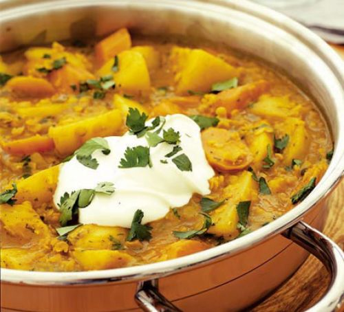

Ingredients:
2 tbsp sunflower or vegetable oil
1 onion, chopped
2 garlic clove, crushed
700g potatoes, peeled and cut into chunks
4 carrot, thickly sliced
2 parsnip, thickly sliced
2 tbsp curry paste or powder
1 litre/1¾ pints vegetable stock
100g red lentils
a small bunch of fresh coriander, roughly chopped
low-fat yogurt and naan bread, to serve

1. Heat the oil in a large pan and cook the onion and garlic over a medium heat for 3-4 minutes until softened, stirring occasionally. Tip in the potatoes, carrots and parsnips, turn up the heat and cook for 6-7 minutes, stirring, until the vegetables are golden.
2. Stir in the curry paste or powder, pour in the stock and then bring to the boil. Reduce the heat, add the lentils, cover and simmer for 15-20 minutes until the lentils and vegetables are tender and the sauce has thickened.
3. Stir in the curry paste or powder, pour in the stock and then bring to the boil. Reduce the heat, add the lentils, cover and simmer for 15-20 minutes until the lentils and vegetables are tender and the sauce has thickened.